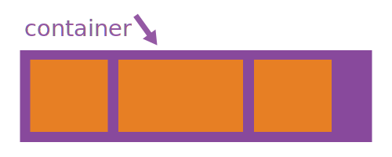

Flexbox Layout
This is a framework CSS for Flex, easy to intial flex-box using class and attr.
Flex Container
Initial Flex
This defines a flex container; inline or block depending on the given value. It enables a flex context for all its direct children.
.flex
1
2
3
Container default is
display: flex
Item default is null or flex: 0 1 auto
Call flex box with class
.flex
HTML:
<div class="flex"></div>
CSS:
.class {
display: flex /* or inline-flex */
}
